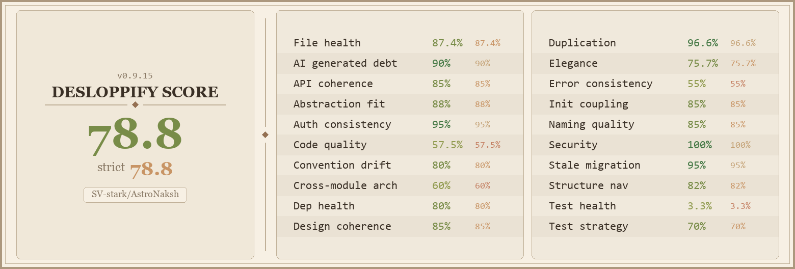

Precision Vedic Astrology & KP System, Engineered for the Modern Era.
An open-source astrological workbench powered by the Swiss Ephemeris astronomical engine, 208,000+ offline global cities, 16 divisional charts, and complete Krishnamurti Paddhati (KP) horary intelligence.
Interactive Astrological Engine
Experience AstroNaksh's calculation core directly in your browser. Inspect birth chart cusps, test KP horary decision algorithms, or view real-time Panchang data.
Click any house on the chart to inspect its significations and occupants
Self, Vitality, Physical Constitution, General Fortune, Personality
| Planet | Sign & Degree | Nakshatra | Sub-Lord | House |
|---|
KP Horary Query
Evaluates Cuspal Sub-Lord (CSL), Star-Lord, and 4-tier ABCD significators.
Cuspal Sub-Lord and Star-Lord connect directly to primary significators. Success indicated during ruling dasha periods.
Significator Hierarchy Matrix (ABCD)
| Significator Tier | Active Planet | Houses Activated |
|---|
Built for Astrological Integrity
AstroNaksh is architected without compromise: sub-arcsecond ephemeris math, transparent open-source code, and 100% on-device data sovereignty.
Swiss Ephemeris Precision
Integrated high-precision astronomical engine from the University of Bern. Sub-arcsecond planetary accuracy across 6,000+ years with complete topocentric corrections.
- Lahiri, KP, KP New, Raman, Tropical
- Calculates in < 500 milliseconds
- True & Mean Node calculations
Complete KP System
Uncut Krishnamurti Paddhati implementation: all 249 sub-division boundaries, cuspal sub-lords, ruling planets (RP), and automated ABCD significator matrices.
- 1–249 Horary (Prashna) assistant
- Placidus unequal house cusps
- Sub-sub lords and star-lord chains
Full Vedic Jyotish Suite
From D1 (Rashi) to D60 (Shashtiamsa) divisional charts, Shadbala 6-fold planetary strength, Ashtakavarga, Tajik Varshaphal, and 100+ Yoga/Dosha recognizers.
- 16 Parashari divisional charts
- Ashtakoota 36-Guna & Dosha Samyam
- Vimshottari, Yogini, & Chara Dashas
100% Offline & Private
Your confidential client records and birth details never leave your physical hard drive. Includes 208,000+ indexed global cities in an embedded SQLite database.
- Zero telemetry, zero third-party trackers
- Fast prefix search in < 100ms
- Fully portable zero-install runtime
Everything a Vedic Astrologer Needs
Designed for professional astrologers, researchers, and dedicated students of Jyotish who demand absolute clarity and mathematical precision.
Remedies & Gemstone Engine
Automated Life Stone, Lucky Stone (9th lord), and Beneficial Stone (5th lord) recommendations with strict Dusthana (6, 8, 12) safety exclusions, Beej Mantras, and Rudraksha guidance.
Multi-Tier Dasha Explorer
Calculates Vimshottari (down to Pratyantardasha and Sookshma), Yogini (36-year cycle), and Jaimini Chara Dashas with exact balance of dasha at birth.
Matchmaking & Compatibility
Complete Ashtakoota 36 Guna Milan with automated Manglik Dosha exception checks, Dosha Samyam balancing, and Navamsa-level harmony verification.
Tajik Varshaphal (Annual Horoscopy)
Solar return charts based on exact Sun degree alignment. Features Muntha, Varshesh selection via Panchavargiya Bala, and 7+ Sahams (Punya, Vidya, Yash).
Transit Analysis & Vedha
Real-time planetary transits overlaid on natal charts. Evaluates Chandra Gochara, Ashtakavarga Kakshya points, and exact Vedha obstruction rules.
PDF Reports & Chart Export
Export client consultations as formatted, high-resolution PDF dossiers containing full Kundali diagrams, Dasha timelines, Shadbala tables, and customized notes.
Why Astrologers Choose AstroNaksh
A transparent breakdown comparing AstroNaksh with commercial cloud apps and legacy desktop astrology tools.
| Feature / Dimension | AstroNaksh | Cloud Astrology Apps | Legacy Desktop Software |
|---|---|---|---|
| Pricing & Licensing | ✓ 100% Free & Open Source (GPL-3.0) | Monthly / Yearly Subscriptions | Expensive Proprietary Licenses |
| Client Data Privacy | ✓ 100% Local (Zero Cloud Leaks) | ✗ User Data Stored on Remote Cloud | ✓ Local Storage |
| Astronomical Accuracy | ✓ Swiss Ephemeris Sub-Arcsecond | Approximate / Truncated Algorithms | ✓ Swiss Ephemeris / Moshier |
| KP System 1–249 Horary | ✓ Full ABCD Matrix & CSL Solver | ✗ Missing or Rudimentary | Often Sold as a Costly Add-on |
| Offline Global Atlas | ✓ 208,000+ Cities Built-in SQLite | ✗ Requires Active Internet | Limited Atlas (Requires Manual Entry) |
| Advertisements & Tracking | ✓ Zero Ads, Zero Telemetry | ✗ Full Tracking & Monetization | ✓ No Ads |
| Modern UI / Cross-Platform | ✓ Modern Fluent UI (Win, Linux, Web) | Mobile Only or Cluttered Web | ✗ Outdated 1990s Windows 98 Look |
Install AstroNaksh on Your System
Download the standalone portable release or build directly from the verified open-source repository.
# 1. Download the latest Windows release bundle
# 2. Extract the ZIP to any directory
# 3. Double-click AstroNaksh.exe (No installation required)
# Or build the portable release via PowerShell:
.\build_portable.ps1
# Clone the repository
git clone https://github.com/SV-stark/AstroNaksh.git
cd AstroNaksh
# Install system dependencies
sudo apt-get install -y clang cmake ninja-build pkg-config libgtk-3-dev
# Build & Run on Linux
flutter pub get
flutter run -d linux
git clone https://github.com/SV-stark/AstroNaksh.git
cd AstroNaksh
flutter pub get
flutter run -d windows # For Windows Desktop
flutter run -d chrome # For Web Browser
System Requirements
- Operating System Windows 10 / 11, Ubuntu 20.04+, Web
- Memory (RAM) 4 GB Min (8 GB Recommended)
- Disk Storage ~500 MB (includes 208k+ cities DB)
- Display Resolution 1280 × 720 (1920 × 1080 optimal)
- Network Dependency 0% (Fully Autonomous Offline)
Desloppify Verified Code Health
AstroNaksh maintains rigorous code health standards, scored through multi-language mechanical and subjective technical debt analysis.
